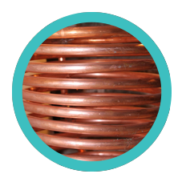
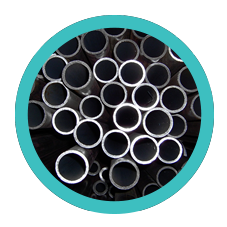
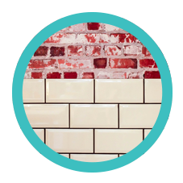
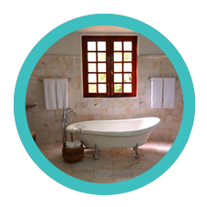

Cobre
Material utilizado en instalaciones de fontanería, gas, calefacción, aire comprimido. Se pueden realizar soldaduras blandas(estaño y plata) y soldadura fuerte (plata).
Hierro
Material en desuso que normalmente se utiliza en mantenimiento y en reparaciones. Normalmente aconsejamos su sustitución por materiales que ofrecen mayor rendimiento.
Alicatados
Trabajamos cualquier tipo de material tanto para exteriores como para espacios interiores. Realizamos revestimientos cerámiccos de gres porcelánico, de cerámicas para baños y de barro cocido y gres.
Baños
Reformas integrales de baños, así como la instalación de complementos en el baño (saunas, cabinas de hidromasaje, bañeras hidrommasaje aire-agua y por ultrasonidos, ...etc).